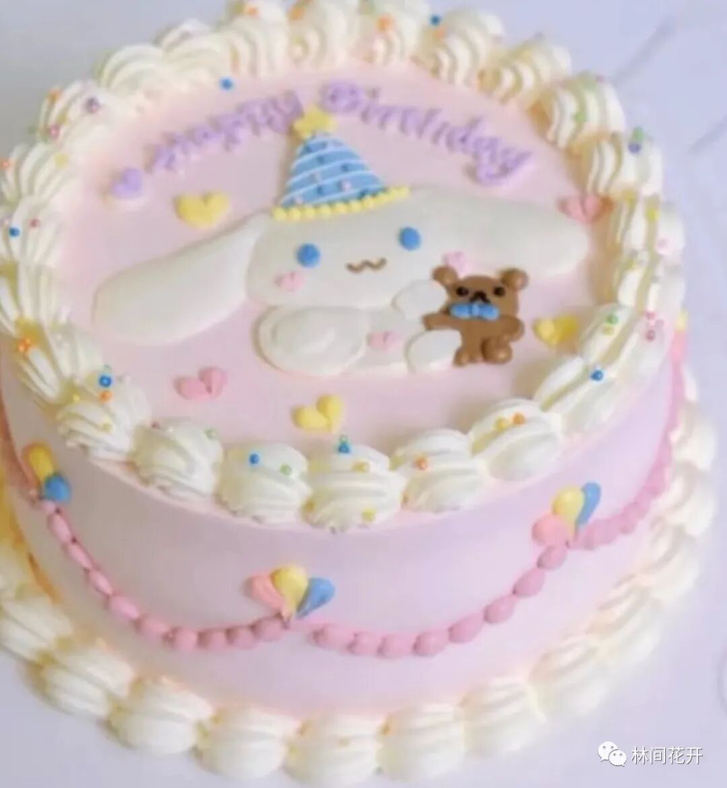
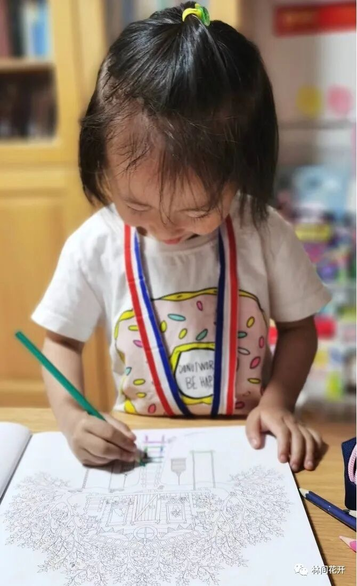

宝贝，生日快乐
绿树浓荫，满袖轻风。上学的路上，你提醒我：“妈妈，你要记得今天当助教的事哦。”“记得，记得，还有小朋友的礼物呢。“我回你，你满意地扬起头：“好期待呀。”
妈妈怎么会忘记呢，这一天我也期待很久了。
1
姐姐年初生日，你双手交叉在胸前，眼神犀利看着我：“为什么只给她过生日，不给我过生日？”
“你的生日还没到呢”，我跟你解释着：“每个人都有自己的生日，一年一次。”
“那我什么时候才能过生日？”你不死心，继续追问，巴不得明天就是你的生日，“等不及了，明天就想过生日。”
你天天不厌其烦问，什么时候才到你的生日。给问烦了。我直接告诉你说：“嗯——这样吧，你来做个记号，这个就是你的生日。”我指着挂历上的日期，“画个圈，你就不会忘了。”
你搬了张凳子，站在挂历前，在生日的那天，圈了个大大的圆，兴奋地说：“我就要过生日了。”

2
这是一个特别的生日。这学期开学时，我特地跟你的班主任申请，在你生日当天，去幼儿园当助教，以别样的方式陪你过生日。
生日前一晚，你和姐姐忙得不可开交，晚饭都顾不上吃，你们要给班里的小朋友准备三十三份礼物，这是你们班的传统。每个助教，给幼儿园的小朋友上课，要带上礼物，每人一份，这成了小朋友每个月最期待的事。
你的生日，姐姐特别上心，建议用盲盒纸包糖果，她刚从小红书上学会折盲盒。她说，小朋友收到礼物时，会好奇里面装了什么，会有小小的惊喜。姐姐平时很喜欢盲盒，她很乐意把她的喜好用在你的生日中。你随即加入姐姐折盲盒的行动中，两人手脚麻利地折完三十三个，把糖果装进去，封上贴纸，连我都期待收到这样的礼物。
装好了玩具和盲盒后，你们把三十三个小袋子排排放在沙发上，一行十一个，像阅兵队一样，行注目礼，你们俩看着这些，长呼了口气：终于装完了，累死我啦。
3
我按时走进教室，一眼看到你坐在第一桌。你曾告诉过她，你是在橙子组，一桌6个小朋友。你跟班里的小朋友都很熟了，每天都能如数家珍一样，告诉我：哪个小朋友今天要老师喂；哪个小朋友拉湿裤子；哪个小朋友调皮捣蛋给老师批评。说到自己时，会不好意思地说，你偶尔也需要老师喂几口。
开场时，我问小朋友：“你们知道我是谁的妈妈吗？”小朋友齐刷刷指向你，你不好意思低下头，但看得出来，你那天很开心。
互动中，我跟小朋友玩起「情绪模仿秀」游戏。我曾跟你说，2-4岁是小朋友情绪爆发的阶段，一不小心，都有可能火山爆发，认识情绪变得很重要。我还告诉你，情绪并不可怕，情绪如文字、数字一样，可以习得。或许因为是你生日，班主任让你优先抽情绪卡片，抽到「生气」的情绪卡，你扭捏着不敢表演，拉着我的衣角，躲在背后，最后，我配合着你，一起完成了表演。
给小朋友挨个发完礼物后，班主任提议让小朋友一起给你唱生日歌，你打着节拍，开心地望向我这边，那一刻，我给喜悦包裹着，难以忘怀。
接你放学时，你说起我当助教的事：“小朋友好爱玩你的游戏，她们说下次再让你妈妈来。”
“等你五岁，六岁，我再来当助教，好不好。”这是我们俩达成的共识。
4
连雨不知春去，一晴方觉夏深。一眨眼，你就已四岁，从一个软软萌萌的小宝宝长成了小女孩，你自己眼中的小姐姐。
你学会自己刷牙，吃饭，白天还能自己睡觉；看到姐姐晾衣服和拖地，一起帮忙；看到我对着散落一地的玩具，快要发火时，你扮着鬼脸说：“生气会掉光头发哦，变成一个光头。”吐吐舌头，自行收拾玩具去......
小时候巴不得你快快长大，过了两岁，又想你悠着点，让我有足够时间成为合格的妈妈，陪着你一起慢慢长大。
在我眼里，你总是那么机智又勇敢，是我的贴心小棉袄。
你是一个机智的小孩。每每数落你调皮捣蛋时，你狡黠地说，哪个小孩不是这样的呢，某某小朋友比我更调皮呢。
我想把用在姐姐身上的小伎俩，用在你身上，让你养成自主看绘本的习惯。比如姐姐每天写小诗，写满一个月，她就请我们吃麦当劳。当我说你每天看绘本，坚持一周，就请我们冰淇淋，你没有半点犹豫说：“为什么我看了绘本，还要请你吃东西，不公平。“
你与姐姐相差三岁多，从小，你就穿她穿过的衣服，你不介意，还乐在其中。有次姐姐穿着新裙子，在你面前得瑟，你淡定地说：”等穿不了，就变成我的啦。“
你还是一个勇敢的小孩。两岁开始，你就懂得保护姐姐，楼下的小孩抢走姐姐的玩具。你走上前，抢了回来，连姐姐都夸你厉害，每次去楼下玩，一定要拉上你。
姐姐属家里胆子最小，害怕各种小动物：天上飞的、地上爬的、水里游的，尤其是蟑螂。一到夏天，家里虫满为患，先是厨房，接着漫延到客厅、房间，厕所也不放过。姐姐开了灯，正要坐在马桶上拉臭，看到脚边爬过的小蟑螂，吓得弹起来，从厕所跑出来，直喊：“妈妈——蟑螂——”在我还没赶到前，你推着小推车先到：“在哪——在哪”。没找着蟑螂，正要往前走时，姐姐拉着你的小手：“陪我一起，我怕。”你在门口坐着，守着姐姐，学着我的语气：“不怕，不怕，我在。”
你是爸妈的贴心小棉袄。爬山时，走着走着，你放开我的手，和姐姐走在前面，想让我和爸爸一起走。你说，小孩跟小孩走，大人跟大人走；吃饭时也如此，让我和爸爸坐一排，你和姐姐坐一排。
看到我骂哭姐姐时，你会拉住我的衣角说：”她哭得那么伤心，别再骂她了，安慰下她。“看到我无动于衷，你自个拿纸巾和水杯递给姐姐，做完这些后，过来安慰我说：”抱抱妈妈，不要生气了。“
5
姐姐总觉得我爱你多一点。我不否认，从小你就比她省心，也没她粘人，懂得察言观色，很少惹我生气。
一天晚上，跟你一起读「猜猜我有多爱你」绘本。你学书中小兔子的模样说：”妈妈，你猜猜，我有多爱你？“我摇摇头。
你张开双手：”有这么多这么多的爱“，还不够，你在床上蹦跳起来：”我跳得有多高，我就有多爱你。“在你睡着后，我爬起来，把互动的过程，写成了一首诗「我有多爱你」：
我的双手伸得有多开
我就有多爱你
我的双脚跳得有多高
我就有多爱你
我的笑声有多甜
我就有多爱你
月亮离我有多远
我就有多爱你
星星有多少颗
我就有多爱你
大海有多宽广
我就有多爱你
妈妈，我好爱你，晚安。
宝贝，如果你问我有多爱你，正如这首诗的一样，那么爱。生日快乐！
